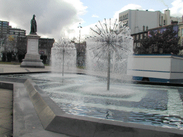

 Au milieu de la Place de Jaude deux bassins contemporains et leurs jets d'eau originaux (les sphères)ont été construits en 1985 lors de la rénovation de la Place. Depuis ce matin ils n'y sont plus (19/11/03)
